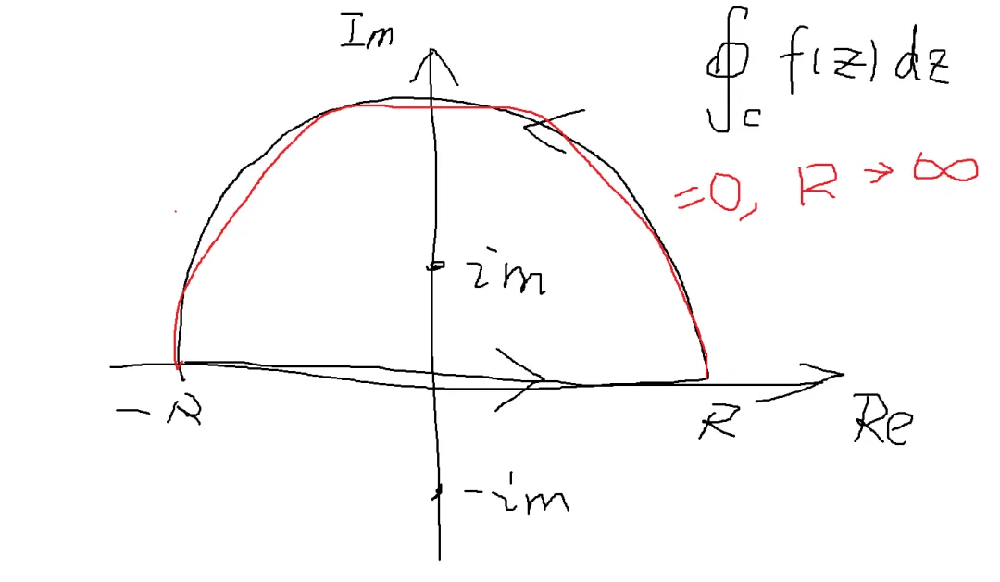

库仑势和汤川势的导出
1. 库仑势
电磁场的拉氏量密度为： $\mathcal L = -\frac{1}{4}F^2_{\mu \nu}-A_\mu J^\mu\\ F^{\mu\nu}\equiv\partial^\mu A^\nu-\partial^\nu A^\mu$ 把 $F_{\mu\nu}$ 展开，交换偏导数顺序，更改角标后，得： $\mathcal L = -\frac{1}{2}(\partial_\mu A_\nu)(\partial^\mu A^\nu)+\frac{1}{2}(\partial_\mu A_\nu)(\partial^\nu A^\mu)-A_\mu J^\mu$
注意到： $\begin{aligned} &\partial_\mu\left(A_\nu\partial^\nu A^\mu-A^\mu\partial_\nu A^\nu\right)\\ &=(\partial_\mu A_\nu)(\partial^\nu A^\mu) \cancel{+A_\nu\partial_\mu\partial^\nu A^\mu} -(\partial_\mu A^\mu)(\partial_\nu A^\nu) \cancel{-A^\mu\partial_\mu\partial_\nu A^\nu}\\ &=(\partial_\mu A_\nu)(\partial^\nu A^\mu) -(\partial_\mu A^\mu)^2 \end{aligned}$
注意到这是一个全导数，在通常的变分边界条件下不影响E–L方程，可以忽略。所以： $\mathcal L =-\frac12(\partial_\mu A_\nu)(\partial^\mu A^\nu) +\frac12(\partial_\mu A^\mu)^2 -J_\mu A^\mu$ 对它应用E-L方程即可。 $\frac{\partial \mathcal L}{\partial A_\nu}-\partial_\mu \left( \frac{\partial\mathcal L}{\partial(\partial_\mu A_\nu)}\right)=0$ 第一项： $\frac{\partial\mathcal L}{\partial A_\nu}=-J^\nu$ 第二项，第一部分，先把dummy indices改为$\alpha$与$\beta$： $\frac{\partial}{\partial(\partial_\mu A_\nu)} \left[(\partial_\alpha A_\beta)(\partial^\alpha A^\beta)\right] =2\partial^\mu A^\nu$ 第二项，第二部分： $\begin{aligned} \frac{\partial}{\partial(\partial_\mu A_\nu)} (\partial_\alpha A^\alpha)^2 &=2(\partial_\alpha A^\alpha) \frac{\partial(\partial_\beta A^\beta)}{\partial(\partial_\mu A_\nu)}\\ &=2(\partial_\alpha A^\alpha)g^{\mu\nu} \end{aligned}$ 全部带回，得： $-J^\nu+\partial_\mu\partial^\mu A^\nu -\partial^\nu\partial_\mu A^\mu=0$ 结合对$F^{\mu \nu}$定义，注意到： $\partial_\mu F^{\mu\nu} =\partial_\mu\partial^\mu A^\nu-\partial_\mu\partial^\nu A^\mu$ 所以，只需要解这个方程： $J^\nu=\partial_\mu F^{\mu\nu}=\Box A^\nu-\partial^\nu(\partial_\mu A^\mu)$ 即可。这里的方块叫d’Alembertian，$\Box\equiv\partial_\mu\partial^\mu=\partial_t^2-\nabla^2$。
使用Lorenz gauge，有$\partial_\mu A^\mu=0$，于是方程变为： $J^\nu=\Box A^\nu \quad\Longrightarrow\quad A_\nu(x)=\frac1\Box J_\nu(x)$ $1/\Box$： the inverse of $\Box$。注意，$A_\nu$ is a field，$J_\nu$ is a source。$1/\Box$ propagates the source，which has the name propagator。（格林函数需要指定边界条件，以下取静态、无额外自由场、无穷远处势为零的解。也就是Dyson展开的第一项，费曼图的第一项）
因为库仑势是静止点电荷产生的，所以$J^\mu=(e\delta^{(3)}(\boldsymbol{x}),\boldsymbol{0})$，代入得 $A_0(\boldsymbol{x})=\frac{e}{\Box}\delta^{(3)}(\boldsymbol{x}), \qquad A_i=0$ 下面求解这个方程。首先，静态情况下$\partial_tA_\mu=0$，因此$\Box=-\nabla^2$，求解： $A_0(\boldsymbol{x}) =\frac{e}{-\nabla^2}\delta^{(3)}(\boldsymbol{x})$ 因为delta函数的Fourier变换为1，我们把函数变换到动量空间： $\delta^{(3)}(\boldsymbol{x}) =\int\frac{d^3k}{(2\pi)^3}e^{i\boldsymbol{k}\cdot\boldsymbol{x}}\\ A_0(\boldsymbol{x}) =\int\frac{d^3k}{(2\pi)^3}\widetilde A_0(\boldsymbol{k})e^{i\boldsymbol{k}\cdot\boldsymbol{x}}\\ \nabla^2e^{i\boldsymbol{k}\cdot\boldsymbol{x}} =-|\boldsymbol{k}|^2e^{i\boldsymbol{k}\cdot\boldsymbol{x}}$ 发现： $\nabla^2\delta^{(3)}(\boldsymbol{x}) =\int\frac{d^3k}{(2\pi)^3} \bigl(-|\boldsymbol{k}|^2\bigr)e^{i\boldsymbol{k}\cdot\boldsymbol{x}}$ 因此，每作用一个$\nabla^2$，在动量空间中就多乘一个$-|\boldsymbol{k}|^2$。类似，四维 Fourier transform 中有$\Box\leftrightarrow-k_\mu k^\mu$。
全部代入，得到： $\cancel{\int\frac{d^3k}{(2\pi)^3}} |\boldsymbol{k}|^2\widetilde A_0(\boldsymbol{k})\cancel{e^{i\boldsymbol{k}\cdot\boldsymbol{x}}} =e\cancel{\int\frac{d^3k}{(2\pi)^3}e^{i\boldsymbol{k}\cdot\boldsymbol{x}}}$ 换回坐标空间： $A_0(\boldsymbol{x}) =e\int\frac{d^3k}{(2\pi)^3} \frac{e^{i\boldsymbol{k}\cdot\boldsymbol{x}}}{|\boldsymbol{k}|^2}$ 下面求这个积分就可以。换成球坐标求它：令$r=|\boldsymbol{x}|$、$k=|\boldsymbol{k}|$，选择动量空间球坐标的极轴沿$\boldsymbol{x}$方向，则$\boldsymbol{k}\cdot\boldsymbol{x}=kr\cos\theta$。 $\begin{aligned} A_0(\boldsymbol{x}) &=\int\frac{d^3k}{(2\pi)^3}\frac{e}{k^2}e^{i\boldsymbol{k}\cdot\boldsymbol{x}}\\ &=\frac{e}{(2\pi)^3} \int_0^\infty dk\,\frac{k^2}{k^2} \underbrace{\int_0^{2\pi}d\varphi}_{2\pi} \underbrace{\int_0^\pi d\theta\,\sin\theta\,e^{ikr\cos\theta}}_{\frac{2\sin(kr)}{kr}} \end{aligned}$ 所以有： $A_0(\boldsymbol{x}) =\frac{2e}{(2\pi)^2r} \int_0^\infty dk\,\frac{\sin(kr)}{k}$ 最右边的积分叫作 Dirichlet integral （$r>0$），它可以用复变函数的积分（用留数定理，对上半圆路径积分，极点位于原点，抠掉极点，半圆外周长根据Jordan引理为0，剩下两段），也可以用拉普拉斯变换求（更简单），总之结果为： $\int_0^\infty dk\,\frac{\sin(kr)}{k}=\frac\pi2$ 全部代入后就求出库仑势： $A_0(\boldsymbol{x})=\frac{e}{4\pi r}$ 形式解 $A_\mu=\Box^{-1}J_\mu$ 就包含了这个计算。$J_\mu$ 可以具有任意形式，但作为 Maxwell 方程的源必须满足电流守恒 $\partial_\mu J^\mu=0$。
库仑定律：$\boldsymbol{E}=-\boldsymbol{\nabla}A_0=\dfrac{e}{4\pi r^2}\hat{\boldsymbol r}$
2. 汤川（Yukawa）势：
通常被称作库仑势的有质量版本。拉氏量密度写作： $\mathcal L=-\frac14F_{\mu\nu}F^{\mu\nu} +\frac12m^2A_\mu A^\mu-A_\mu J^\mu$ 也就是刚才的拉氏量加了一项，整理后是： $\mathcal L = -\frac{1}{2}(\partial_\mu A_\nu)(\partial^\mu A^\nu)+\frac{1}{2}(\partial_\mu A_\nu)(\partial^\nu A^\mu)+\frac12m^2A_\mu A^\mu-A_\mu J^\mu$
点源是静态的，取： $J^\mu=(\rho,\boldsymbol{0}), \qquad \rho(\boldsymbol{r})=g\delta^{(3)}(\boldsymbol{r})$
与第一部分一样，忽略全导数后，拉氏量也可以写成： $\mathcal L =-\frac12(\partial_\mu A_\nu)(\partial^\mu A^\nu) +\frac12(\partial_\mu A^\mu)^2 +\frac12m^2A_\mu A^\mu-A_\mu J^\mu$ 质量项不含场的导数，所以 E–L 方程的第二项与前面相同，第一项变为： $\frac{\partial\mathcal L}{\partial A_\nu} =m^2A^\nu-J^\nu$ 全部带回，得： $-J^\nu+m^2A^\nu+\partial_\mu\partial^\mu A^\nu -\partial^\nu\partial_\mu A^\mu=0$ 这个方程叫Proca方程： $J^\nu=(\Box+m^2)A^\nu-\underbrace{\partial^\nu(\partial_\mu A^\mu)}_{0}$
下面说明，在现在的条件下，第二项为什么为零。这里不能像无质量时那样任意选择Lorenz gauge。注意到，对 Proca 方程两边作用 $\partial_\nu$： $\partial_\nu\Big(-J^\nu+m^2A^\nu+ \underbrace{\partial_\mu\partial^\mu A^\nu-\partial^\nu\partial_\mu A^\mu}_{\partial_\nu(\partial_\mu F^{\mu\nu})=0} \Big)=0$ 作用后剩下两项： $m^2\partial_\nu A^\nu=\partial_\nu J^\nu$ 对这里的静态点源，$\partial_\nu J^\nu=0$，且 $m\ne0$，所以必须有$\partial_\nu A^\nu=0$。于是方程变为： $J^\nu=(\Box+m^2)A^\nu$ 点源静止，取 $A_i=0$，且 $\Box=-\nabla^2$，因此只需要求解： $(-\nabla^2+m^2)A_0(\boldsymbol{r}) =g\delta^{(3)}(\boldsymbol{r})$ （注意到，这个方程的左侧实际上就是Klein-Gordon方程去掉时间部分！）
即： $A_0(\boldsymbol{r}) =\frac{g}{-\nabla^2+m^2}\delta^{(3)}(\boldsymbol{r})$
与第一部分一样，把函数变换到动量空间，再换回坐标空间，方法同上，（一个不严谨的理解：直接把delta函数等效于那个傅里叶积分，把达朗贝尔算符等效于除以$-k^2$），得到： $A_0(\boldsymbol{r}) =g\int\frac{d^3k}{(2\pi)^3} \frac{e^{i\boldsymbol{k}\cdot\boldsymbol{r}}}{|\boldsymbol{k}|^2+m^2}$
下面换成球坐标。令 $r=|\boldsymbol{r}|>0$、$k=|\boldsymbol{k}|$，极轴沿 $\boldsymbol{r}$ 方向，则 $\boldsymbol{k}\cdot\boldsymbol{r}=kr\cos\theta$： $\begin{aligned} A_0(\boldsymbol{r}) &=\frac{g}{(2\pi)^3} \int_0^\infty dk\,\frac{k^2}{k^2+m^2} \underbrace{\int_0^{2\pi}d\varphi}_{2\pi} \underbrace{\int_0^\pi d\theta\,\sin\theta\,e^{ikr\cos\theta}}_{\frac{2\sin(kr)}{kr}}\\ &=\frac{g}{2\pi^2r}\int_0^\infty dk\, \frac{k\sin(kr)}{k^2+m^2} \end{aligned}$
最后把 $\sin(kr)$ 改写成指数形式： $\sin(kr)=\frac{e^{ikr}-e^{-ikr}}{2i}$ 于是： $A_0(\boldsymbol{r}) =\frac{g}{4\pi^2ir} \left[ \int_0^\infty dk\,\frac{ke^{ikr}}{k^2+m^2} -\int_0^\infty dk\,\frac{ke^{-ikr}}{k^2+m^2} \right]$ 对第二个积分令 $k=-q$，得： $\int_0^\infty dk\,\frac{ke^{-ikr}}{k^2+m^2} =-\int_{-\infty}^0dq\,\frac{qe^{iqr}}{q^2+m^2}$ 因此两个积分可以合并为： $A_0(\boldsymbol{r}) =\frac{g}{4\pi^2ir} \int_{-\infty}^{\infty}dk\, \frac{ke^{ikr}}{k^2+m^2}$ 下面来求这个积分： $I(k)=\int_{-\infty}^{\infty}dk\, \frac{ke^{ikr}}{k^2+m^2}$ 利用留数定理： $\oint_C f(z)\,dz=2\pi i\sum^n_{j=1}\operatorname{Res}(f,z_j)$ $j$ 为路径内极点的数目。 $\operatorname{Res}(f,z_0)=\lim_{z\to z_0}(z-z_0)f(z)$ 定义： $f(z)=\frac{ze^{izr}}{z^2+m^2} =\frac{ze^{izr}}{(z-im)(z+im)}$ 它有两个一阶极点：$z=im$ 和 $z=-im$。

取上半平面的半圆闭合路径 $C_R$：先沿实轴从 $-R$ 到 $R$，再沿上半圆弧 $\Gamma_R$ 从 $R$ 回到 $-R$，整体为逆时针方向，其中 $R>m$。
为什么取上半平面？令 $z=x+iy$，则： $e^{izr}=e^{ixr}e^{-yr}$ 由于 $r>0$，在上半平面 $y>0$ 时指数衰减。又因为 $z/(z^2+m^2)$ 在无穷远处趋于零（由 Jordan’s lemma）。
因此，实轴积分等于闭合路径积分的极限：
这里只有上半平面的极点 $z=im$ 被路径包围。它的留数为： $\begin{aligned} \operatorname{Res}_{z=im}f(z) &=\lim_{z\to im}(z-im)\frac{ze^{izr}}{(z-im)(z+im)}\\ &=\left.\frac{ze^{izr}}{z+im}\right|_{z=im}\\ &=\frac{im\,e^{-mr}}{2im} =\frac12e^{-mr} \end{aligned}$ 所以： $\int_{-\infty}^{\infty}dk\,\frac{ke^{ikr}}{k^2+m^2} =2\pi i\cdot\frac12e^{-mr} =\pi i\,e^{-mr}$ 代回 $A_0$： $A_0(\boldsymbol{r}) =\frac{g}{4\pi^2ir}\cdot\pi i\,e^{-mr} =\frac{g}{4\pi r}e^{-mr}$ i.e., Yukawa potential, 相比库仑势，多出了一个指数衰减因子 $e^{-mr}$，在自然单位制下，特征作用距离为 $1/m$。当 $m\to0^+$ 时： $A_0(\boldsymbol{r})\longrightarrow\frac{g}{4\pi r}$ 即回到库仑势的形式。
这里求得的是源产生的场 $A_0$。若另一静止试探粒子的耦合为 $g’$，相互作用势能为 $V(r)=g’A_0(r)=\dfrac{gg’}{4\pi r}e^{-mr}$。